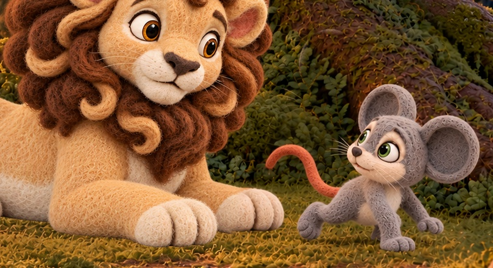
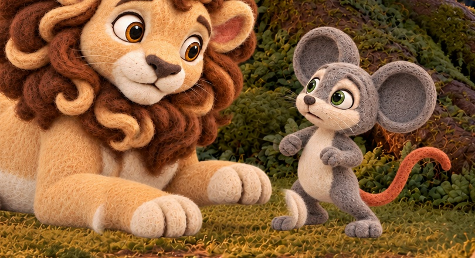
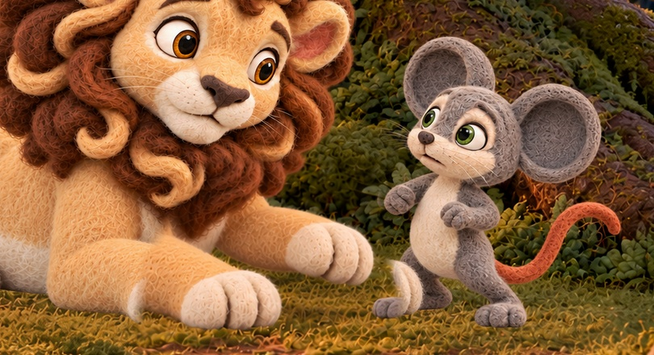
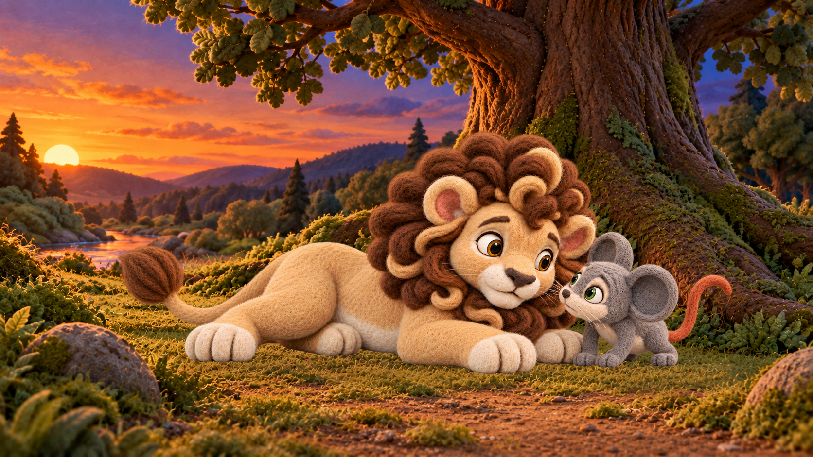
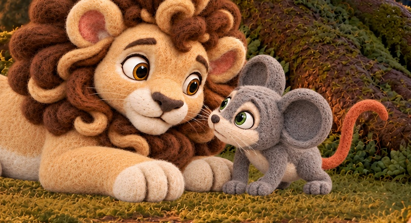
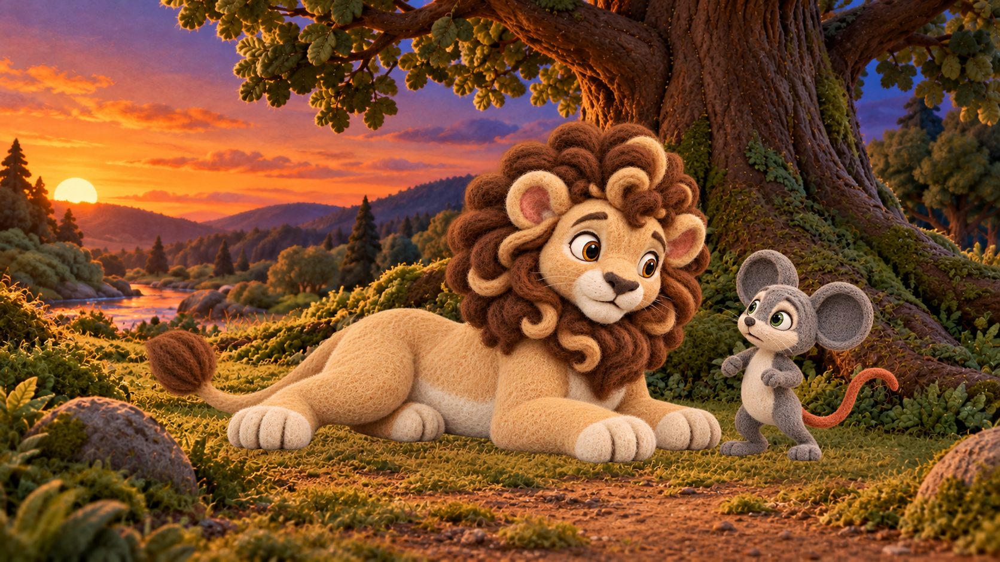
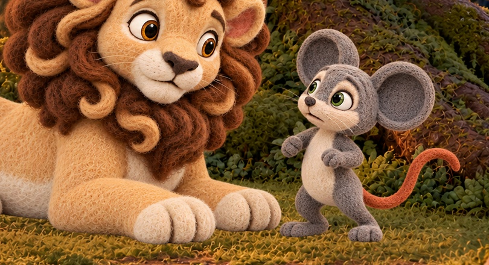
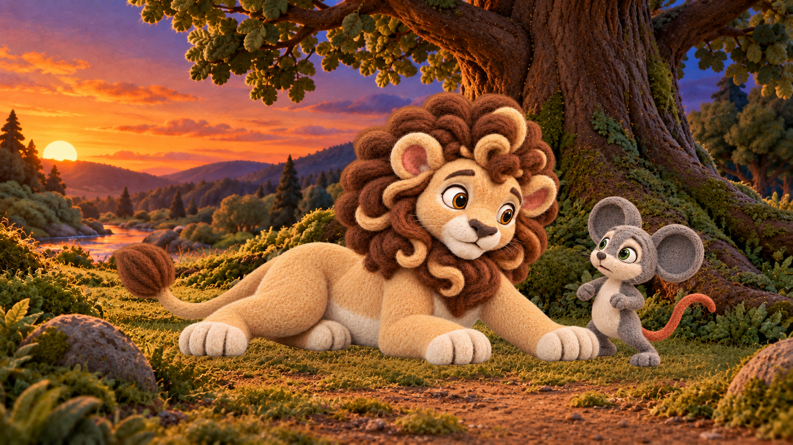
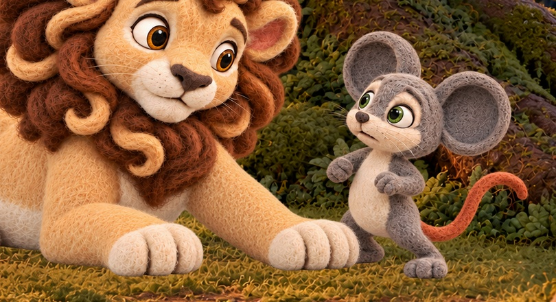

S06-L001-B02-I01_scramble_descent_r006_candidate.png
Unselected candidate



INCONCLUSIVE for scramble descent: Milo faces/look back toward Leo while stepping screen-right, with a bracing forepaw on grass and a lifted hind foot. Limbs appear attached; grey felt, cream torso and orange tail read consistently. This already-grounded stance does not itself show descent from Leo. A continuous descent trajectory is unproven.
f385d913f123ff72e1e1480b3acf79767ebf04add06699049974bd63181c9d41S06-L002-B01-I01_front_paw_ready_r005_candidate.png
Unselected candidate



SUITABLE as a ready-paw depiction for owner review: Leo remains lying with one forepaw modestly raised; Milo stays upright at viewer-right. No obvious extra limb or penetration. Support/shadow under the raised paw must remain airborne. No owner approval inferred.
4dd4a6307ca7ae60a4865b3b255a629d3fb498989ab019de07d9f1f5f306a85dS06-L002-B01-I02_front_paw_descending_r005_candidate.png
Unselected candidate



UNSUITABLE as an unambiguous descending state in this ordered chain: the raised paw is visibly higher than in ready r005, reading as further lift. A still cannot establish velocity, but the proposed pair does not demonstrate the stated descent. Limb attachment reads coherent; final selected block remains a distinct lower/extended target.
bd14846ab15e15475cc4ad54a81cabcdcd824d152435e8f45b65dbdc171639c9S06-L001-B01-I01_start_rest_nose_r001_candidate.png
Selected source still




Selected rest/nose anchor; Milo crouched beside Leo. This differs from the newly selected low S05 landing; a rise/cut needs honest editorial accounting.
bc914de64088c20665c254e5e7a84a96bfaf282cb0d12781c42e0a61ff964dfdS06-L001-B02-I02_end_path_arrival_r001_candidate.png
Selected source still




Selected path-arrival anchor: Milo upright at viewer-right.
2933f39200694de8b8ca03b9ece22ea204b5d5aa88e6d3a63ca5c22f63de46b0S06-L002-B01-I03_end_front_paw_block_r001_candidate.png
Selected source still




Selected blocking anchor: Leo front paw extended across Milo’s lower-body route.
c8a49ebe6bfc11eb69e07f307367e6cf6c304f3e8a0ab81e1339e466302fbd19